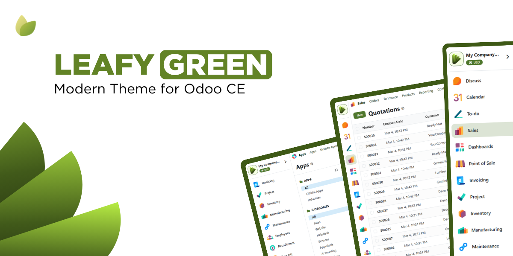
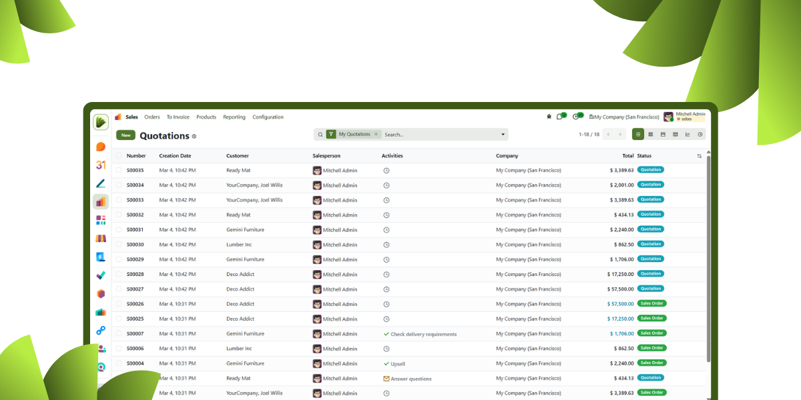
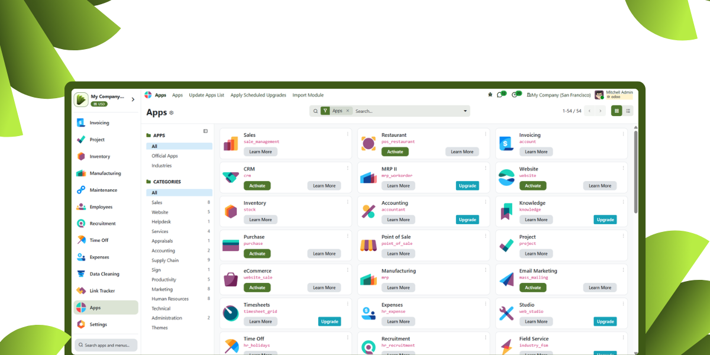

A modern, clean, and professional backend theme for Odoo Community Edition
Revamp your standard Odoo backend with Leafy Green. Our theme brings a refreshing new look crafted with care to reduce eye strain and improve productivity.

Experience seamless navigation. Leafy Green is designed to work perfectly on any screen size, enhancing your workflow whether you are on a desktop, tablet, or mobile device.

We completely redesigned the sidebar and navbar to provide a smoother and more intuitive user experience. Access your apps faster and with style.
